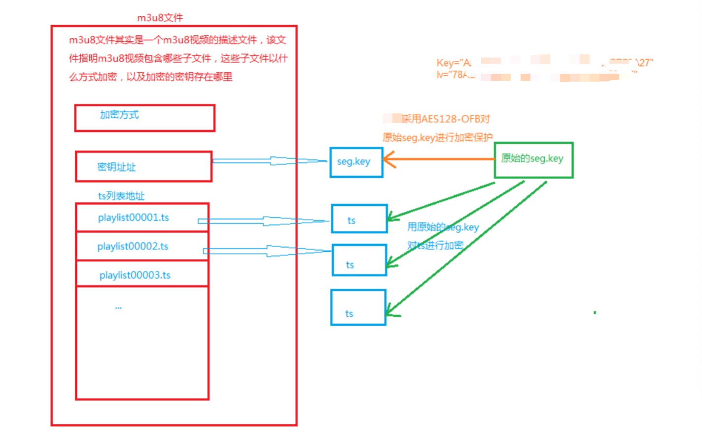
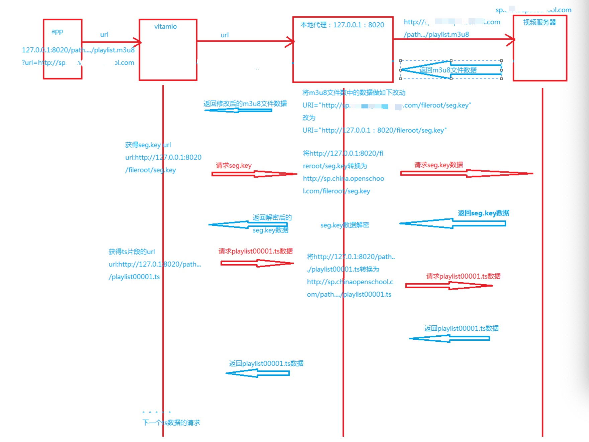

移动端Vitamio播放m3u8本地文件原理
一、直接播放m3u8的原理
m3u8视频地址url=http://sp.aal.com/fileroot/course/...../playlist.m3u8
1、上面的url由以下三部分组成：
a.服务器地址：域名或ip地址-- http://sp.aal.com
b.文件路径：/fileroot/course/...../
c.文件名：playlist.m3u8
2.vitamio获得url进入视频播放的动作如下：
a.请求url,获取得playlist.m3u8，文件的内容如下：
#EXTM3U
#EXT-X-VERSION:3
#EXT-X-TARGETDURATION:10
#EXT-X-MEDIA-SEQUENCE:0
#EXT-X-KEY:METHOD=AES-128,URI="http://sp.aal.com/fileroot/seg.key",IV=0x1133557799BBDDFF0022446688AACCEE
#EXTINF:10.000000,
playlist000000.ts
#EXTINF:10.000000,
playlist000001.ts
#EXTINF:10.000000,
playlist000002.ts
#EXT-X-ENDLIST
如上的m3u8文件，包含有以下几个信息，
a).视频片段文件：如playlist000000.ts
b).ts的加密方式METHOD=AES-128
c).ts加密的密钥URI="http://sp.chinaopenschool.com/fileroot/seg.key"
b.vitamio解析playlist.m3u8文件获取seg.key的URI向网络发起请求获得seg.key数据
c.vitamio拼接ts请求地址向网络获取ts数据，ts的url拼接如下：
m3u8文件的url----http://sp.aal.com/fileroot/course/...../playlist.m3u8
则ts文件的url--- http://sp.aal.com/fileroot/course/...../playlist000000.ts
简单说就是将m3u8文件的url中playlist.m3u8替换为playlist000000.ts
vitamio获取m3u8文件是为了获取seg.key和*.ts，有了seg.key和*.ts vitamio就能根据key和加密方式解密*.ts进行播放
在线播放无加密m3u8文件流程
二、通过本地代理播放m3u8文件的原理
1.为什么要通过本地代理方式来播放m3u8文件
m3u8文件结构图
由下图可以看出的m3u8文件中的seg.key是被加密过的，要正常播放m3u8视频，则播放器要能够获取原始的seg.key。 由于采用的播放器vitamio无法获取源码，所以无法通过在vitamio请求keg的接口处做key的解码工作。所以需要一个 本地代理来完成该工作。这样vitamio不与视频服务器直接打交道，而是通过本地代理进行中转。本地代理接收vitamio 的数据请求，然后由本地代理向视频服务器请求数据，从视频服务器获得数据后，在本地代理处先对seg.key文件做解密， 然后本地代理将解密后的数据返回vitamio
2.本地代理、app、vitamio、服务器4者的关系如下图所示

本地代理的位置图
3.通过本地代理播放m3u8文件的播放流程
通过本地代理播放m3u8视频的流程